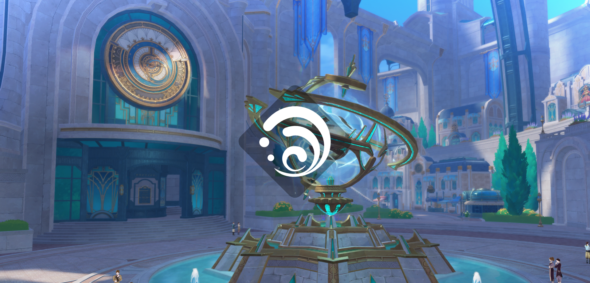
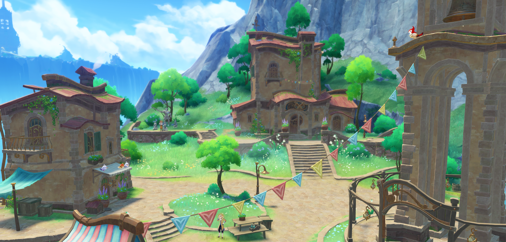
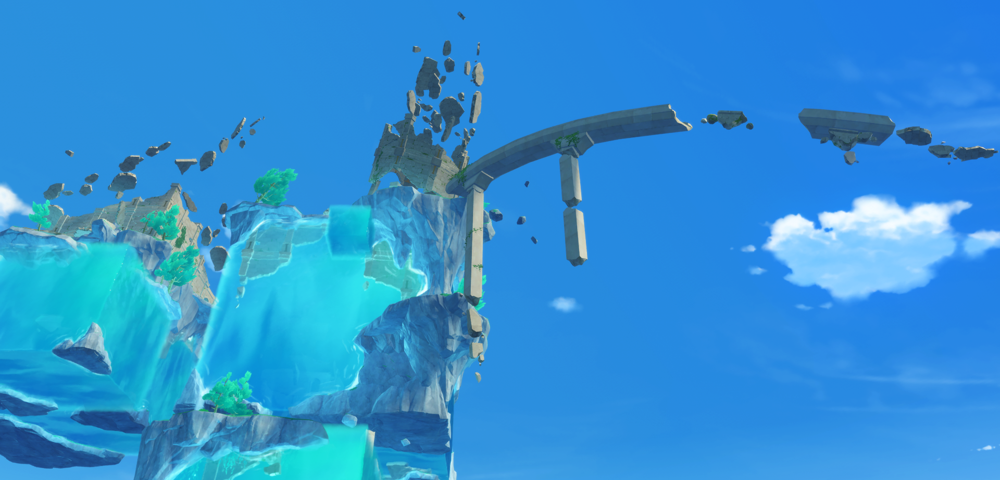

FONTAINE
- Země spravedlnosti -

Pozemské moře v centru Teyvatu.
Po směru čistých proudů, protínající divočinu, hlubiny lesů a rozlehlé moře písku, připlouvající k pramenům všech vod kontinentu. Na vrcholu vodopádu, v hlubinách hlavního města na pozemském moři... příběh, který nikdo neslyšel, legenda, která byla zapomenuta, jako ztracené království potopené pod vlnami, toužící po bardu, aby zpíval jeho utopené písně.
Fontaine je jedním ze sedmi regionů Teyvatu. Je to národ, který uctívá Focalor, bohyni vod a spravedlnosti.
Z oblastí Teyvatu se Fontaine pyšní jako centrum kultury a umění. Noviny The Steambird jsou hlavní noviny Fontaine. Podle Steambird se Fontaine nachází v centru Teyvatu a je zdrojem všech vod na kontinentu.

Celá Fontaine je vyvýšená, díky čemuž je položena výrazně výše než jiné národy. Na okraji Fontaine je mohutný vodopád, který se táhne tisíce metrů.
Nostoi je oblast nacházející se ve Fontaine. Nenachází se na vyvýšené kontinentální desce, na které leží zbytek Fontaine. Nostoi je oblast, která je na mapě označena jen jako jeden malý ostrov ale pod ním se skrývá obří podmořské soujeskynní plné ruin dávných civilizací a jiných tajemství.